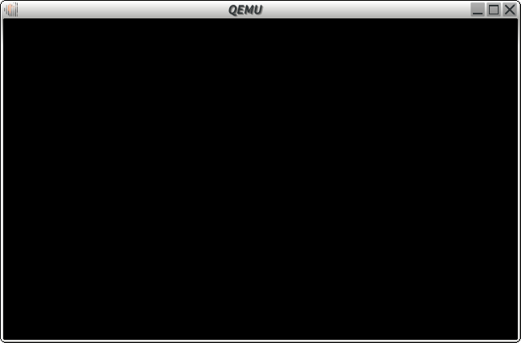
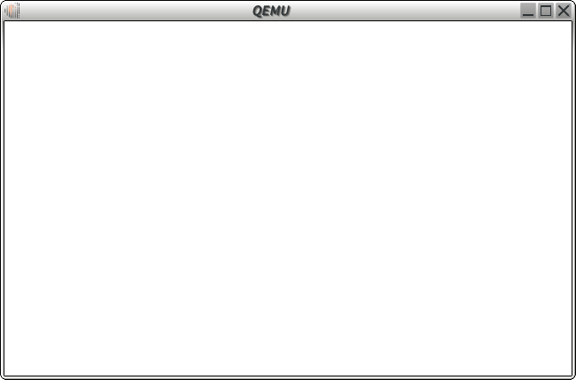
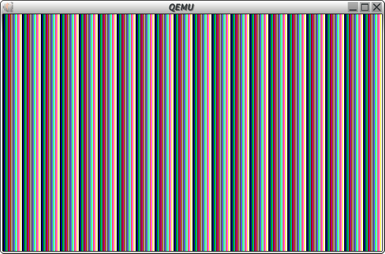
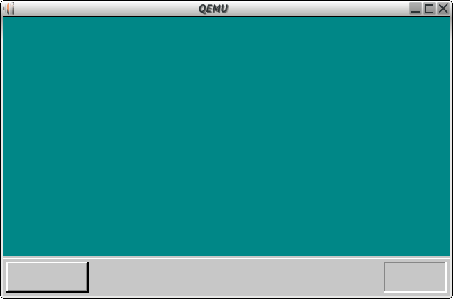
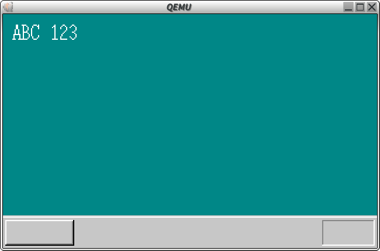
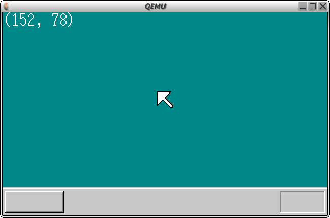

７９ー１０４日目 - ビルドプロセスの確立(harib00j~harib03d) 2016/10/27, 11/7, 8, 16-18, 20, 22-30, 12/1, 2, 5-12
ビルドプロセスの確立(harib00j~harib03d)
やっといろいろスムーズにビルドが通り始めた。画像は今の自作OSのスクリーンショットです。
詳しい実装方法やTipsについては以下のQiitaに書いた
harib00j
C言語とリンク

harib01a
画面を白くした

harib01d
画面を縞模様に

harib02a
デスクトップもどきを描画

harib02e
文字の描画とbin2objの使用

harib02h
座標表示とsprintf(libc相当のライブラリ使用)
